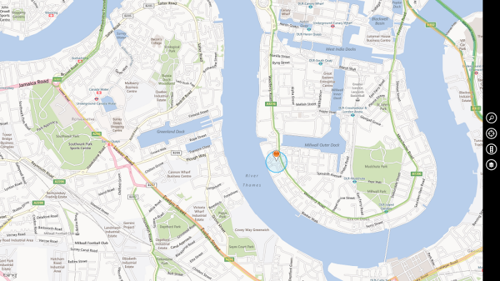
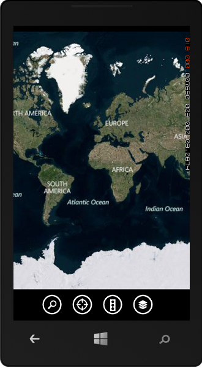

This sample shows how to create a cross platform mapping application that works on the web, on mobile, and as a Windows Store app all using the Bing Maps JavaScript control. The code sample includes three apps; a web app, a Windows Phone 8 app, and a Windows Store app. The Windows Phone app has a local copy of the web version of the application and loads it into a web browser control. This same approach can be used to create native applications for Andoid and iOS.
The core functionality of the sample application is the web application (BingMaps_Mobile_HTML5). The main JavaScript, and CSS files along with all the images are based in this application. The other two applications reference in a link to these files. The Windows Phone application also has a reference the the index.html file from the web project. The Windows Store app has a default.html file which contains most of the same content as the index.html file but has additional references to internal libraries and also the Windows Store App version of the Bing Maps SDK.
To run this sample you must install the Bing Maps SDK for Windows Store apps and the Windows Phone SDK. You will also need to get a Bing Maps key for Windows Store apps or mobile. You must also have Windows 8 and Visual Studio 2012.
Open the sample in Visual Studio and insert your Bing Maps key in the map.js file which is part of the BingMaps_Mobile_HTML5 project where it says “YOUR_BING_MAPS_KEY” in the source code. You must perform the following steps for your app project to work correctly with Bing Maps. Detailed instructions are provided below.
Description
The Bing Maps V7 AJAX control is a JavaScript based mapping control that is supported on most major PC & Mac browsers, along with most major smart phone browsers. It is also the basis to the Bing Maps Windows Store JavaScript control with vry close parity with the web version of the control. Because of this we can create cross platform applications that work on the web, mobile and as Windows Store apps using mainly only one set of code. This makes for much faster development than developing an application fro each platform.
One of the key aspects to creating cross platform applications is to test for features rather than creating code that uses browser detection. It's also important to keep in mind how users will use the application. Most users on mobile devices will be using touch where as web users will likely be using a mouse. Due to this buttons should be big eough that it is easy to tap with a finger and mouse hover events should be avoided. Also, if single or multi touch is not supported then additional navigation tools may need to be visible to the user. For intance, WP7 only supports single touch in the browser, as such the user wouldn't be able to zoom the map using pinch to zoom, so the application displays zoom buttons to the user that way they can still navigate the map.
This sample makes provides the following features:
Here is a screenshot of the Windows Store App:

Here is a screenshot of the Windows Phone app:
